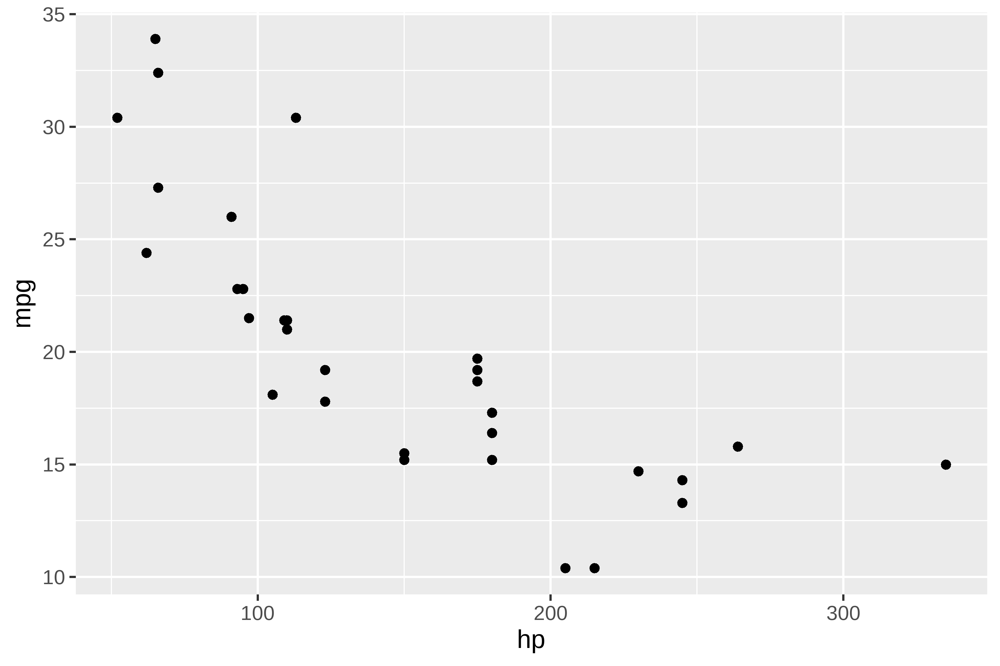
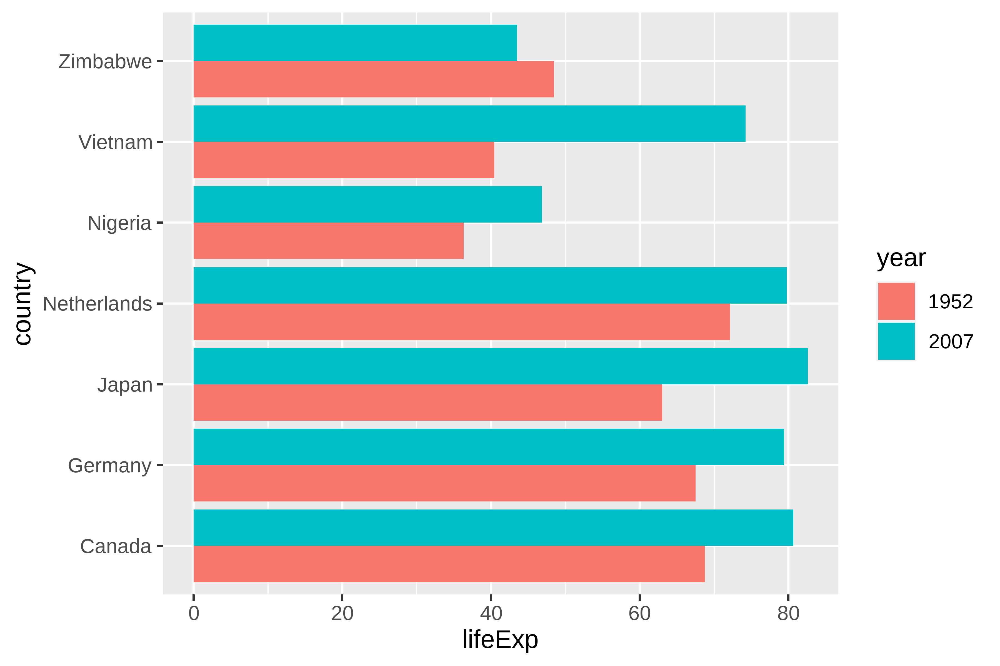
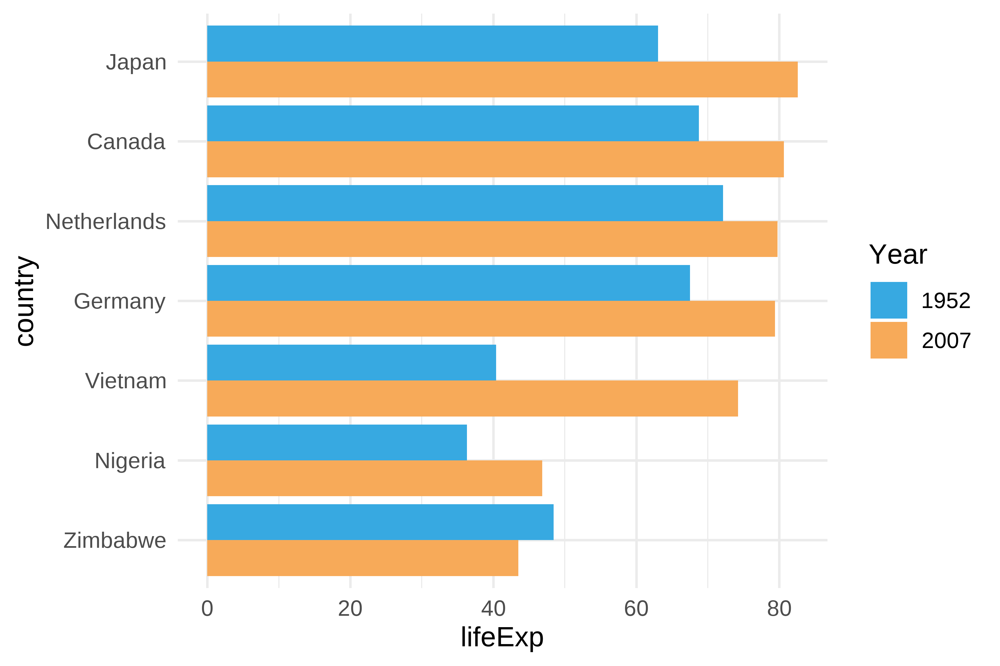
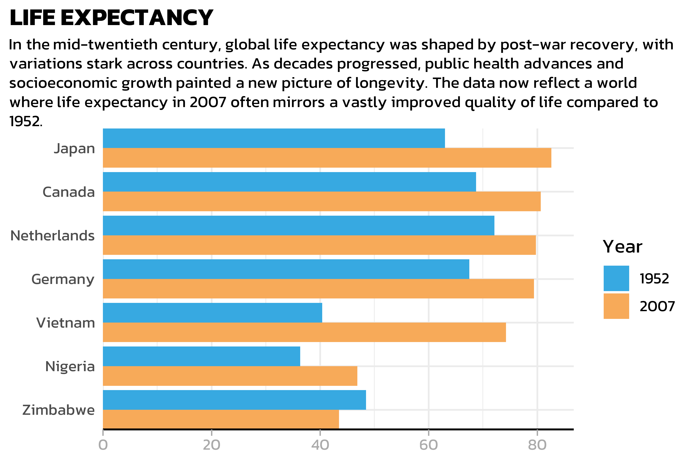
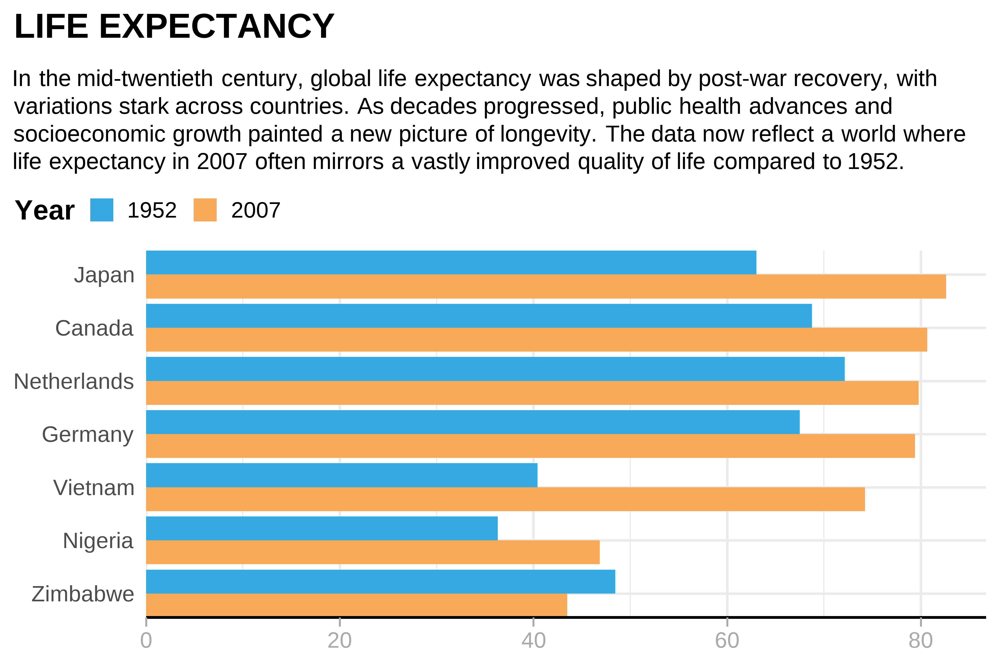

install.packages("cowplot")
install.packages("gapminder")
install.packages("ggrepel")
install.packages("ggtext")
install.packages("scales")
install.packages("showtext")
install.packages("tidyverse")
install.packages("viridis")Tutorial: Advanced data visualization in R
70th Biometrical Colloquium 2024 in Luebeck
This is the supporting material for the tutorial Advanced data visualization in R which takes place 28.02.2024 09:00-12:00. Here is the tutorial description as displayed on the website’s conference program:
Advanced data visualization in R: (Re)producing professional plots with ggplot2 and the tidyverse
Lecturer: Paul Schmidt (BioMath GmbH, Hamburg)
Learning objectives:
- Deep dive into ggplot2: Understand the intricacies of ggplot2 for top-tier data visualization
- Data manipulation with tidyverse: Utilize packages like dplyr, tidyr, and forcats to shape data optimally for creating graphs
- Aesthetic fine-tuning: Master the skills of axis formatting, theme detailing, and color selection
- Reproducing Exercise: Recreate published plots to understand the application of ggplot2 techniques in real-world scenarios
- Exporting excellence: Learn best practices for exporting plots in publication-ready formats
Target group:
- Anyone wanting to produce or present high-quality plots. Conveying complex data insights through refined visualizations is a relevant part of statistical analysis
Prerequisites:
- Basic understanding of R programming is required
- Basic knowledge of ggplot2 and the tidyverse is beneficial, but not required
- R-packages: tidyverse, cowplot, ggrepel, ggtext, viridis
Format: Hybrid
Part 0: Setup
The decision on which plots to create in this workshop was inspired by this blog post by Albert Rapp whose R and data visualization content is worth checking out!
You will need to install and load the following packages
library(cowplot)
library(gapminder)
library(ggrepel)
library(ggtext)
library(scales)
library(showtext)
library(tidyverse)
library(viridis)
showtext::showtext_opts(dpi = 300)Notice that we expect participants with different levels of experience in this tutorial. Furthermore, the tutorial duration is only 3 hours and thus quite short. As a consequence, this material often links to other resources with more detailed information instead of blowing up the content of this material. However, where possible, these links don’t simply lead to official online documentation etc. which may be hard to grasp for beginners, but instead to other workshop content created by this tutorial’s main lecturer.
Part 1: A single plot
Lets us first create a single plot to compare the life expectancy between 1952 and 2007 for seven countries, respectively.
Data prep
The data is courtesy of the Gapminder foundation and can easily be accessed via the {gapminder} package. We can then make use of the pipe operator %>% to create a subset of the data via the filter() function. Then, in order for our ggplot to work as intended in the next step, we also need to format the year column as a factor instead of an integer value via mutate(). Both functions are from the {dplyr} package which we loaded as part of the {tidyverse}. Finally, we use droplevels() to get rid of the factor levels that are now no longer present in the data (i.e. the countries we did not filter for).
dat <- gapminder::gapminder %>%
filter(year == 1952 | year == 2007) %>%
filter(country %in% c("Canada", "Germany", "Japan", "Netherlands", "Nigeria", "Vietnam", "Zimbabwe")) %>%
mutate(year = as.factor(year)) %>%
droplevels()
dat# A tibble: 14 × 6
country continent year lifeExp pop gdpPercap
<fct> <fct> <fct> <dbl> <int> <dbl>
1 Canada Americas 1952 68.8 14785584 11367.
2 Canada Americas 2007 80.7 33390141 36319.
3 Germany Europe 1952 67.5 69145952 7144.
4 Germany Europe 2007 79.4 82400996 32170.
5 Japan Asia 1952 63.0 86459025 3217.
6 Japan Asia 2007 82.6 127467972 31656.
7 Netherlands Europe 1952 72.1 10381988 8942.
8 Netherlands Europe 2007 79.8 16570613 36798.
9 Nigeria Africa 1952 36.3 33119096 1077.
10 Nigeria Africa 2007 46.9 135031164 2014.
11 Vietnam Asia 1952 40.4 26246839 605.
12 Vietnam Asia 2007 74.2 85262356 2442.
13 Zimbabwe Africa 1952 48.5 3080907 407.
14 Zimbabwe Africa 2007 43.5 12311143 470.The base plot
One typical way you may find data like this visualized is via a grouped bar plot. The minimum amount of code to create such a plot via ggplot is this:
ggplot(data = dat) +
aes(x = lifeExp, y = country, fill = year) +
geom_col(position = position_dodge())
Read this if you are not familiar with the general ggplot syntax. We need to add position = position_dodge() to geom_col(), since the default is to stack the multiple bars (for the different years) on top of each other (as seen in the Nature example plot below).
(factor) level reordering
It may seem irritating that countries are sorted alphabetically starting at the bottom. Moreover, 1952 is below 2007 in the plot (but not in the legend!). This is because these two columns are formatted as factors in our data and by default factor levels are sorted alphabetically.
Note that ggplot applies this factor level order, but does it so from bottom to top.
levels(dat$country)[1] "Canada" "Germany" "Japan" "Netherlands" "Nigeria"
[6] "Vietnam" "Zimbabwe" A useful package for dealing with factors in R is {forcats} whose functions all start with fct_*. One way of dealing with this is changing the factor level order in the data before passing it to ggplot. Here, we may simply reverse the order via fct_rev().
dat <- dat %>%
mutate(across(c(country), ~ fct_rev(.x)))levels(dat$country)[1] "Zimbabwe" "Vietnam" "Nigeria" "Netherlands" "Japan"
[6] "Germany" "Canada" ggplot(data = dat) +
aes(x = lifeExp, y = country, fill = year) +
geom_col(position = position_dodge())
Alternative 1
# alternatively, you may apply fct_rev() inside aes() instead of altering the data beforehand
ggplot(data = dat) +
aes(x = lifeExp, y = fct_rev(country), fill = year) +
geom_col(position = position_dodge())Alternative 2
# alternatively, you may manually provide the levels in the desired order within scale_y_discrete()
ggplot(data = dat) +
aes(x = lifeExp, y = country, fill = year) +
geom_col(position = position_dodge()) +
scale_y_discrete(limits = c("Zimbabwe", "Vietnam", "Nigeria", "Netherlands", "Japan", "Germany", "Canada"))However, it probably makes more sense to sort the countries according to the data. Here, we could sort them according to their life expectancy in 2007.
sorted_countries <- dat %>%
filter(year == "2007") %>%
arrange(lifeExp) %>%
pull(country) %>%
as.character()
dat <- dat %>%
mutate(country = fct_relevel(country, sorted_countries))
ggplot(data = dat) +
aes(x = lifeExp, y = country, fill = year) +
geom_col(position = position_dodge())
Next, we address the order of years in the plot and the legend. As you can see in the previous plots, once more the first factor level (1952) is on the bottom, while the second level (2007) is on top. Thus, we could use one of the approaches shown for country to change that. More precisely, let’s take the approach of Alternative 1 and use fct_rev() inside the aes().
Note however, that while this changes the order of the years in the plot, it does not affect their order in the legend. To address that, we can use the limits = argument in scale_fill_manual() (which corresponds to Alternative 2 above):
ggplot(data = dat) +
aes(x = lifeExp, y = country, fill = fct_rev(year)) +
geom_col(position = position_dodge()) +
scale_fill_discrete(limits = c("1952", "2007"))
Alternative
# alternatively, you may reverse the legend order via guides()
ggplot(data = dat) +
aes(x = lifeExp, y = country, fill = fct_rev(year)) +
geom_col(position = position_dodge()) +
guides(fill = guide_legend(reverse = TRUE))Reproducing a theme
Now that we’ve got the basics correct, the next thing I would want to change is things like the theme, i.e. the non-data components of the plot: titles, labels, fonts, background, gridlines, and legends.
Using theme() allows us to format our plot in any way we want. Instead of picking things based on what feels good, let us here try to recreate the layout of a plot published in Nature in ‘150 years of Nature: a data graphic charts our evolution’ by Richard Monastersky & Richard Van Noorden (2019). URL to the plot.

Thus, a better starting point would be to use the complete theme theme_minimal() instead of the default theme_gray(). From here, we can further adjust things via theme().
Furthermore, let’s also pick two of the colors used in that image (e.g. via any online color picker) for our years. We can create a named vector year_colors and when changing scale_fill_discrete() to scale_fill_manual() supply it via the values = argument.
Finally, as our ggplot-code is getting longer, let’s start saving out current plot into an object p and reuse it.
year_colors <- c("1952" = "#37A9E1", "2007" = "#F7AA59")
p <- ggplot(data = dat) +
aes(x = lifeExp, y = country, fill = fct_rev(year)) +
geom_col(position = position_dodge()) +
scale_fill_manual(
name = "Year",
limits = c("1952", "2007"),
values = year_colors) +
theme_minimal(base_size = 12)
p
font
Here, I found a font named Kanit that looks similar enough by browsing through the Google Fonts.
sysfonts::font_add_google("Kanit", "kanit")
showtext::showtext_auto()
# We alreday did this above, but dont forget about it:
# showtext::showtext_opts(dpi = 300)
long_subtitle <- "In the mid-twentieth century, global life expectancy was shaped by post-war recovery, with variations stark across countries. As decades progressed, public health advances and socioeconomic growth painted a new picture of longevity. The data now reflect a world where life expectancy in 2007 often mirrors a vastly improved quality of life compared to 1952."
p <- p +
labs(
title = "LIFE EXPECTANCY",
subtitle = long_subtitle
) +
theme(text = element_text(family = "kanit")) +
theme(
plot.title.position = "plot",
plot.title = element_text(size = 15, face = "bold"),
plot.subtitle = ggtext::element_textbox_simple(size = 10, margin = margin(5, 0, 5, 0))
)
p
axes
More details on axis formatting can be found here. For our specific goal, we start by removing the axis titles as well as unnecessary space beyond the limits of each axis. Furthermore, there should be no axis line for the y-axis and a relatively thick black line with grey ticks for the x-axis.
p <- p +
scale_y_discrete(
# remove title
name = NULL,
# no extra space above or below
expand = c(0,0)
) +
scale_x_continuous(
# remove title
name = NULL,
# only 5% extra space above upper limit
expand = expansion(mult = c(0, 0.05))
) +
theme(
axis.line.y = element_blank(),
axis.text.x = element_text(color = "#AAAAAA"),
axis.ticks.x = element_line(color = "#AAAAAA", linewidth = 0.4),
axis.ticks.length.x = unit(4, "pt"),
axis.line.x = element_line(color = "black", linewidth = 0.6)
)
p
legend
p <- p +
guides(fill = guide_legend(
title.position = "left",
nrow = 1)
) +
theme(
legend.position = "top",
legend.box.just = "left",
legend.justification = "left",
legend.margin = margin(5, 0, 0, -57, unit = "pt"),
legend.title = element_text(face = "bold"),
legend.key.size = unit(0.4, "cm")
)
p
grid lines
p <- p +
theme(
panel.grid.minor = element_blank(),
panel.grid.major.y = element_blank(),
panel.grid.major.x = element_line(linetype = "dotted", color = "#AAAAAA", linewidth = 0.3)
)
p
Improve the plot
Labels
p <- p +
geom_text(
mapping = aes(label = round(lifeExp), group = fct_rev(year)),
position = position_dodge(width = 0.9),
hjust = 1.1,
color = "white",
family = "kanit"
)
p
Dumbbell plot
dat_wide <- dat %>%
select(country, year, lifeExp) %>%
pivot_wider(names_from = year, values_from = lifeExp, names_prefix = 'year_')p2 <- ggplot(data = dat, aes(x = lifeExp, y = country, color = fct_rev(year))) +
scale_color_manual(
name = "Year",
limits = c("1952", "2007"),
values = year_colors
) +
labs(
title = "LIFE EXPECTANCY",
subtitle = long_subtitle
) +
scale_y_discrete(
name = NULL,
# expand = c(0, 0)
) +
scale_x_continuous(
name = NULL,
# expand = expansion(mult = c(0, 0.05))
) +
guides(
fill = guide_legend(title.position = "left", nrow = 1)
) +
theme_minimal(base_size = 12) +
theme(
plot.title.position = "plot",
plot.title = element_text(size = 15, face = "bold"),
plot.subtitle = ggtext::element_textbox_simple(size = 10, margin = margin(5, 0, 10, 0)),
axis.line.y = element_blank(),
axis.text.x = element_text(color = "#AAAAAA"),
axis.ticks.x = element_line(color = "#AAAAAA", linewidth = 0.4),
axis.ticks.length.x = unit(4, "pt"),
axis.line.x = element_line(color = "black", linewidth = 0.6),
legend.position = "top",
legend.box.just = "left",
legend.justification = "left",
legend.margin = margin(5, 0, 0, -57, unit = "pt"),
legend.title = element_text(face = "bold"),
legend.key.size = unit(0.4, "cm"),
panel.grid.minor = element_blank(),
panel.grid.major.y = element_blank(),
panel.grid.major.x = element_line(linetype = "dotted", color = "#AAAAAA", linewidth = 0.3)
)
p2
p2 <- p2 +
geom_segment(
data = dat_wide,
aes(x = year_1952, xend = year_2007, y = country, yend = country),
color = "#AAAAAA",
linewidth = 1
) +
geom_point(size = 3)
p2
dat_wide <- dat_wide %>%
mutate(
max_x = pmax(year_2007, year_1952),
diff_num = year_2007 - year_1952,
diff_chr = sprintf("%+d", round(diff_num))
)
p2 <- p2 +
geom_text(
mapping = aes(label = round(lifeExp)),
size = 2.5,
vjust = -1
) +
geom_text(
data = dat_wide,
inherit.aes = FALSE,
mapping = aes(y = country, x = max_x, label = diff_chr),
size = 2.5,
hjust = 0,
color = "#AAAAAA",
position = position_nudge(x = 1)
)
p2
TODO
- discuss advantage
Part 2: Multiple plots
TODO
Choosing colors
TODO
- copy colors from nature plot
- use viridis colors instead